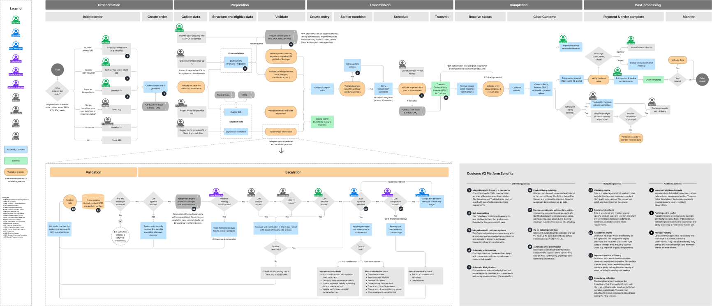
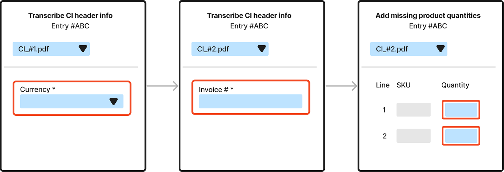
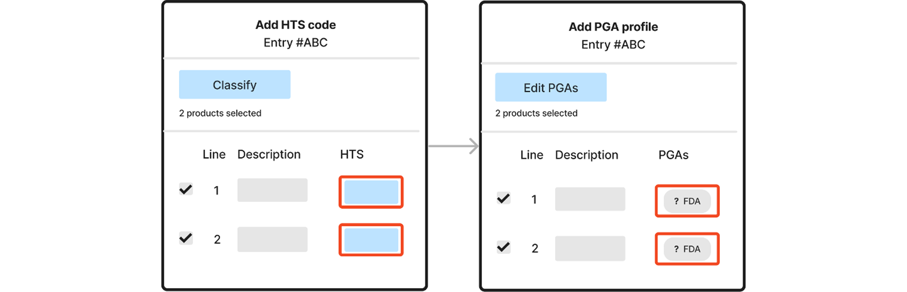
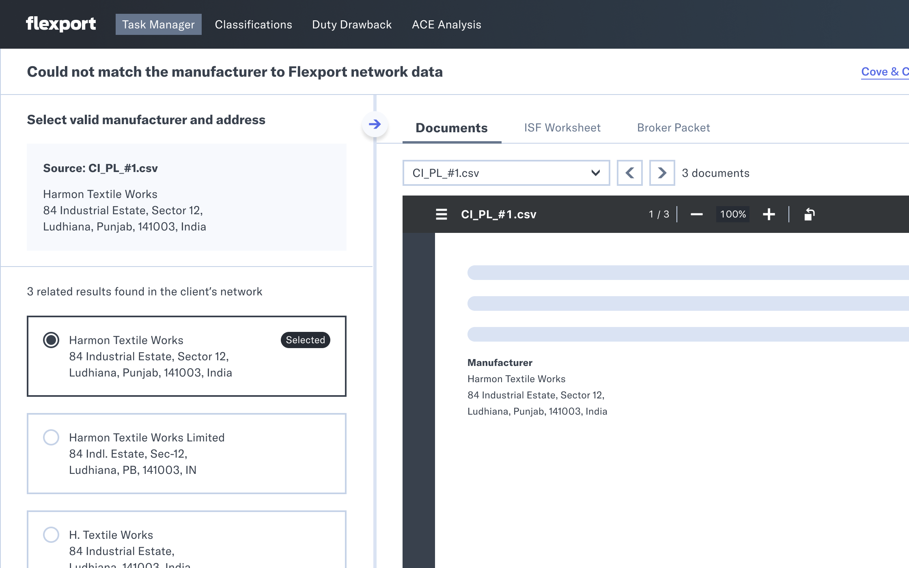
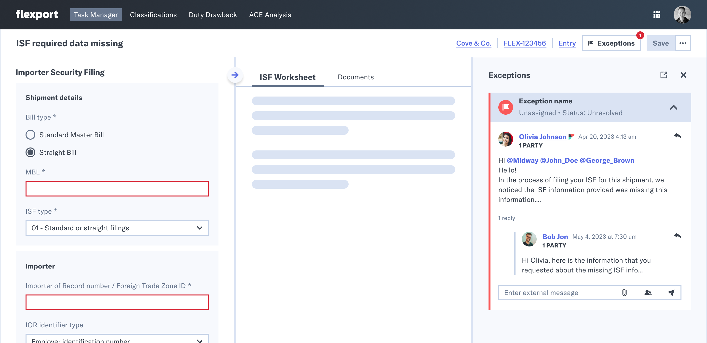
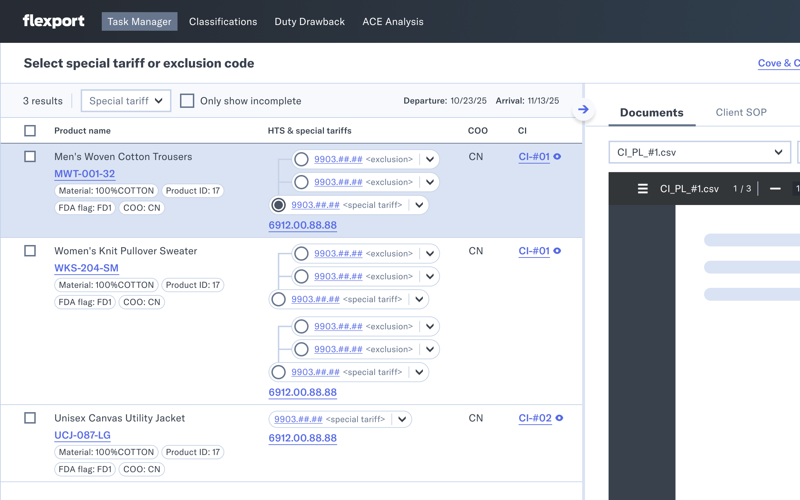
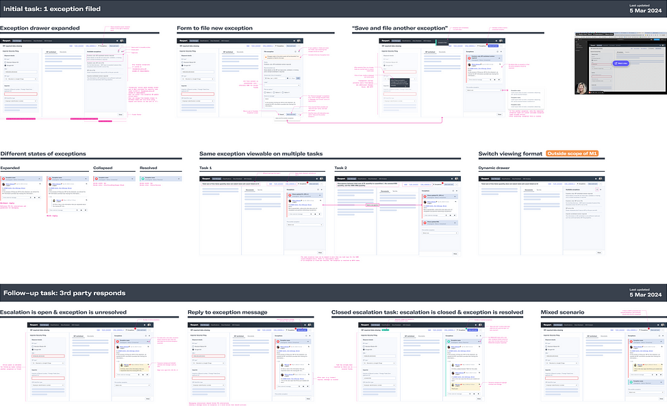

From Manual Filings to Automated Customs Clearance
How I led the 0→1 redesign of Flexport's customs clearance platform, replacing manual broker workflows with an automation-first task system.
Project at a Glance
Problem: Flexport's customs brokers spent the majority of their time on manual data verification rather than high-value client work. Without automation or prioritization, filings were slow, costly, and dependent on individual broker knowledge. Late or incorrect filings resulted in real consequences for importers.
My Role: Design lead across the full lifecycle, from vision and strategy through execution, working cross-functionally with engineers, product, and stakeholders.
Action: Led the 0→1 transition from a legacy platform to an automation-first, task-based system. Designed the core task framework and interaction model that defined how brokers experience and complete every task in the system. Extended the design system to support a team of roughly twenty engineers as the sole designer. Planned and facilitated a week-long onsite UAT in Amsterdam to resolve issues and prepare for scale.
Result: Piloted with a large European apparel retailer, the Task Manager drove measurable gains across 2024–2025: invoice digitization time dropped from 23 to 17 hours, operator capacity more than doubled, and "commercial invoice not keyed" exceptions fell 71% year-over-year. ISF filings began processing automatically, saving 11.5 minutes per shipment, with the pilot client's full volume enrolled in CI digitization by mid-2025.
The Shift to Automation
Customs clearance is a critical step in global trade, requiring accurate documentation to ensure goods move across borders compliantly and on time. At Flexport, customs brokers relied on a legacy system to manage, edit, and file import entries. The platform lacked automation and clear prioritization, forcing brokers to spend the majority of their time on manual data verification rather than the strategic, high-value client work they were trained for.
The Challenges
- Data Trust: Inconsistencies across the platform had eroded broker trust to the point where brokers verified everything manually, regardless of whether it needed checking.
- No Prioritization: Brokers started each day by manually sorting through their full queue to decide what needed attention. The system gave them no guidance.
- Real Stakes: Late or incorrect filings resulted in delays, penalties, and fees for importers. Overreliance on individual broker knowledge and inadequate tooling made this a constant risk.
The Vision: A Zero-touch Experience
A zero-touch experience that leverages automation and validation to ensure complete, accurate, and compliant entry filing every time. Getting there meant rethinking the model from the ground up. Automate the filing, continuously validate the data, and only involve a broker when the system isn't confident it can resolve something on its own.
I led the 0→1 transition from incremental fixes on the existing platform to an automation-first, task-based approach. While I collaborated with two other designers on the initial high-level vision, I owned end-to-end execution, working cross-functionally with engineers and stakeholders to ensure strategic direction aligned with technical feasibility and business goals.

Approach & Key Design Decisions
Automation First, Humans in the Loop
The legacy platform surfaced everything at once. Data inconsistencies across the system had eroded trust, so brokers double-checked everything manually across multiple sources before filing. The result was an enormous amount of time spent on verification rather than active decision making.
The Task Manager was built on a different premise: automation handles entry filing and continuously validates data as it's received. When confidence is low, the right person is assigned the right task at the right time. When confidence is high, no task is generated.
Designing the Task Structure
That model only works if brokers trust what they're shown. I designed the two-panel layout that structures every task in the system, giving brokers exactly what they need to make a confident decision without leaving the platform.
- Action Panel: Surfaces the one validation error that needs resolving, with exactly the inputs and related fields required to complete the task.
- Reference Panel: Provides upstream source data and additional context, including external data iframed directly into the panel, so brokers have everything they need in one place.
Each concept started with the minimum amount of information and expanded only when feedback justified it. I ran qualitative sessions with brokers throughout, observing how they worked through tasks and where they hesitated, got confused, or looked for information the interface wasn't surfacing. Those sessions were paired with quantitative signals: task completion rate, time on task, and number of interactions per task. Together they drove each iteration, always with the same long-term goal: reduce the need for human intervention and move closer to a zero-touch filing process.
Defining the Framework
Before any grouping or prioritization logic could be designed, the team needed a shared language. Without it, conversations would break down. I planned and facilitated a series of working sessions with engineers, product, and stakeholders to build that shared framework: defining how tasks are structured, how related tasks are grouped, how ordering works, and how claiming removes the overhead of manual queue sorting. Getting alignment on those concepts as a group, rather than through async back-and-forth, was what unblocked design and engineering to move in the same direction.


Working closely with engineering, I also mapped the full exception lifecycle: how tasks are generated, claimed, escalated to third parties, and closed. This included edge cases like browser tab closures, inactivity timeouts, and closed escalation tasks that still require a broker's review. Customs declarations have real filing deadlines, and an unclaimed or stalled task is a compliance risk.
The Tasks
Each task type represents a distinct validation failure that automation could not resolve on its own. The task framework had to accommodate a wide range of failure modes, from missing data to conflicting sources to regulatory determinations that require client-specific judgment. The examples below show four task types, each with a different interaction pattern, selected to illustrate the range of complexity the system had to handle.
CMQ Mismatch Task
This task is triggered when shipment data conflicts across multiple sources and the system cannot resolve the discrepancy automatically. Rather than blocking the broker, the system flags the specific fields in conflict, allowing the broker to make an informed decision on how to proceed.

Manufacturer Matching Task
This surfaces when the manufacturer listed on a commercial document cannot be automatically matched to a verified entity in Flexport's network. The broker sees the source data alongside a ranked list of close matches, with subtle differences in name formatting and address structure that reflect how manufacturer data varies across document sources.

ISF Missing Data Task
This surfaces when required data is missing, incomplete, or invalid and cannot be resolved automatically. The action panel surfaces only the fields that need resolving. Brokers sometimes can't resolve these on their own and need to reach out to a third party. The exception thread in the reference panel keeps that communication inside the task.

Special Tariff Selection Task
This task groups all SKUs on an entry flagged for special tariff review, surfacing them together so brokers can resolve determinations in a single session. Where multiple special tariffs apply to a product, a determination must be made on each one. Option ordering and grouping reflect real regulatory hierarchy, with the client SOP in the reference panel so brokers have the context they need.

Scaling Design Consistency with the Customs Design System
As the sole designer supporting roughly twenty engineers, the design system was how I maintained consistency and velocity. Early on, I worked with engineers to establish feature parity as they rebuilt the existing system in TypeScript. From there, the component library and Storybook integration became the team's primary reference for straightforward tasks, reducing independent decisions that would have compounded into inconsistencies. For more complex flows, Figma communicated interactions, edge cases, and intent.

Design Leadership & UAT
Throughout the project I worked to embed design thinking into how the team operated, including training engineers on usability testing and how to apply qualitative insights to product decisions.
In November 2024 I planned and facilitated a week-long onsite UAT in Amsterdam, bringing together customs brokers, compliance specialists, and the engineering team.
- Dogfooding: Engineers completed real tasks themselves with broker guidance, building trust and a shared understanding of the experience. They came away asking better questions and making more informed decisions about what to fix and why.
- Observed Sessions: One broker completed tasks with an engineer alongside them while the rest of the team observed from a separate room, debriefing together after each session. Proximity, even indirect, built empathy that fully remote sessions hadn't achieved.

By the end of the week the team had resolved the highest priority issues and had a product ready to scale beyond the initial pilot client.
Impact & Outcomes
By shifting brokers from manual verification to exception-based oversight, the Task Manager freed them to focus on the strategic client work that actually requires their expertise, while giving the business a foundation to scale without growing headcount.
Piloted with a large European apparel retailer handling thousands of ocean and air shipments into the US annually, the results across 2024-2025:
- Digitization Speed: The average time to digitize a commercial invoice, from upload to completion, dropped from 23 hours to 17 hours, while the team doing that work shrank by 50%. The same output, half the people, faster.
- Operator Productivity: Daily digitization capacity per person more than doubled, from around 50 commercial invoices to 110.
- Exception Reduction: "Commercial invoice not keyed" exceptions, cases the system couldn't resolve automatically and escalated for human review, fell from 526 in May 2024 to 152 in May 2025, a 71% reduction year-over-year.
- Automated Filing: ISF filings began processing automatically in 2024, saving 11.5 minutes of broker time per shipment. By mid-2025, the pilot client's full volume was enrolled in CI digitization on the Task Manager, with broader platform adoption ongoing across all clients.
Final Reflection
The Task Manager was one of the most complex design challenges I've worked on. Customs regulations are ambiguous, client requirements are deeply specific, and the brokers using the system are subject matter experts. What looks like a straightforward task in design can read very differently to someone who has spent their career in customs, and some tasks were genuinely complex to interact with. The hardest ongoing challenge was simplifying without oversimplifying: getting the information, interactions, and language right required deep domain understanding and constant pressure-testing with real users.
Jeri led, designed, and implemented the 0 to 1 project to design a new internal facing operator platform to automate a customs entry. Jeri excels at zooming out to understand the high-level system and zooming in to execute the finer details. Jeri played a critical role in aligning the technology and business organization around the vision of the new platform. Jeri welcomes feedback, collaborates effortlessly, and is a genuinely good person. I would jump at the chance to work with her again.